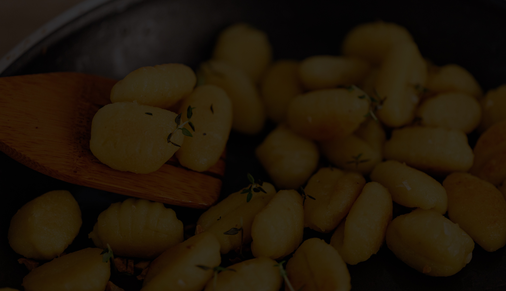

Sushi
Es un plato de la gastronomía japonesa con base de arroz condimentado con vinagre y azúcar, relleno de salmón y/o verduras.

Panchos veganos
El ingrediente principal de las salchichas veganas suele ser proteína de soja, junto con uno o varios aceites, especias y otras adiciones de origen vegetal.
